Docker output,
made readable.
cool-docker-commands ships one binary — dok. It reads the
Docker socket and prints it for humans: colour that means something, compose
grouping, human sizes and ages, and real themes.
What eza is to ls.

Ten screens, one binary.
Each command prints one static screen and exits. No TUI to learn, no state to
keep — it pipes into grep like anything else, and drops colour and
icons automatically when it is not a terminal.
The command set
Read-only, every one of them.
- dok pscontainers, grouped by project
- dok imagessize and age gradients
- dok dfdisk usage, reclaimable bars
- dok inspectthe JSON, folded and masked
- dok logsmerged tail, level colouring
- dok topprocess tree inside a container
- dok treeprojects, networks, volumes
- dok statslive CPU / memory dashboard
- dok eventscolour-coded daemon events
- dok themeslist and preview themes
- dok updatecheck for a release, install it





Safe by design
It looks. It never touches.
- read-onlyno start/stop/rm
- no shell-outsocket, not the CLI
- one binaryno runtime
- --demoworks with no daemon
Nine ways in.
No runtime dependencies. It needs a reachable Docker daemon and honours
DOCKER_HOST, the default socket and Windows named pipes.
$ brew install alsaadii98/tap/dok$ cargo install dok-cli # crate dok-cli, binary dok
# not on the AUR yet - build from the PKGBUILDs in the repo $ git clone https://github.com/alsaadii98/cool-docker-commands $ cd cool-docker-commands/packaging/aur $ makepkg -si -p PKGBUILD-bin # prebuilt
$ curl -LO https://github.com/alsaadii98/cool-docker-commands/releases/latest/download/dok_amd64.deb $ sudo dpkg -i dok_amd64.deb
$ curl -LO https://github.com/alsaadii98/cool-docker-commands/releases/latest/download/dok.x86_64.rpm $ sudo rpm -i dok.x86_64.rpm
$ wget https://github.com/alsaadii98/cool-docker-commands/releases/latest/download/dok-x86_64.apk $ apk add --allow-untrusted ./dok-x86_64.apk # aarch64 too
$ nix run github:alsaadii98/cool-docker-commands$ scoop bucket add dok https://github.com/alsaadii98/cool-docker-commands $ scoop install dok/dok
$ git clone https://github.com/alsaadii98/cool-docker-commands $ cd cool-docker-commands && cargo build --release
Then try it without a daemon:
dok ps --demo.

Themes that change more than colour.
A theme carries a palette, a glyph set and a layout. Switch to ascii
and the box glyphs, bars and tree marks become genuine ASCII — not colourless
Unicode.
Ten built in
Pick per run with --theme, or set one and forget it.

Or build your own
dok themes --init writes this to ~/.config/dok/config.toml.
theme = "mine" icons = "nerd" # auto | nerd | unicode | none [themes.mine] base = "gruvbox" # any built-in glyphs = "heavy" # unicode | ascii | heavy | slim layout = "grid" # default | ruled | grid | quiet header = "dim" # underline | bold | dim | caps green = "#00ff00" # override any role
Or just dok ps --theme nord.

It tells you when it is old.
dok asks GitHub for the latest release at most once a day and prints one dim line under the output you asked for. Never when piped, never in the way.
One line, once a day
Printed after the output, not instead of it.
$ dok ps …your containers… dok 0.1.4 is out (you have 0.1.3) — run `dok update`
DOK_NO_UPDATE_CHECK=1 turns it off for good.
Then update in place
Checksum-verified, or the right package manager command.
$ dok update --check # report only $ dok update # ask, then replace $ dok update -y # no questions
Installed by brew, apk, dpkg, rpm or cargo? dok prints that manager's upgrade command instead of touching a file it does not own.